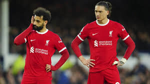

صلاح ونونيز .. في لقطة جدلية

لقطة التقطت بعد قيام نونيز لاعب نادي ليفربول بتضييع ركلة ترجيحية في إياب دوري ال18 من دوري أبطال أوروبا ضد النادي الباريسي أثارت جدلا في الأوساط الكروية.
بعد انتهاء داروين نونيز من تنفيذ ركلة ترجيحية تصدى لها دوناروما حارس باريس ،توجه نونيز الى حيث يقف زملائه الذين واسوه جميعهم ،إلا صلاح ، الذي لم يقترب منه أصلا ، وفي تحقيق للشبكة ، وجدنا أبرز ماقد يجعل صلاح يتجاهل نونيز وكأنه - كما في أحد التقارير - أكل حلاله.
في عام 2016 وفي إحدى المقابلات التي أجريت مع نونيز ، صرح فيها عندما سئل عن رأيه في صلاح خارج الملعب ، قال: صلاح خارج الملعب مختلف كثيرا ، وأضاف أن صلاح لا يهتم بدوري الأبطال بقدر مايهتم ب"الكريسمس"، وربما هذا السبب الذي جعل صلاح "يشخصنها" مع نونيز في تلك اللقطة.
📸 7m.7hd